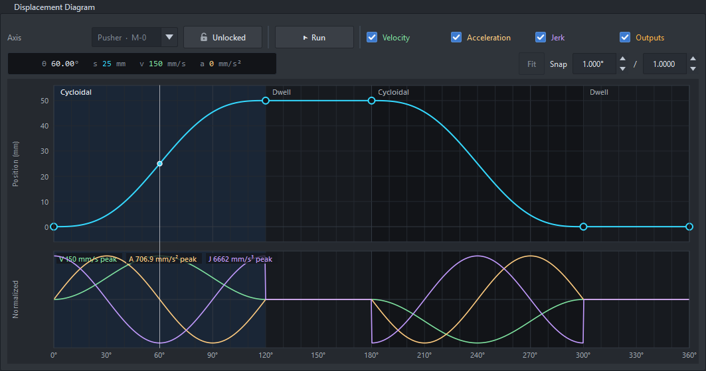
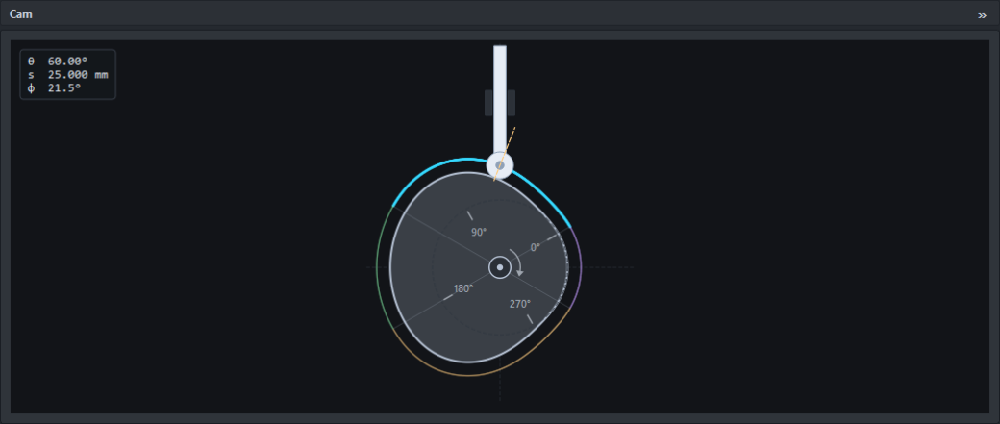
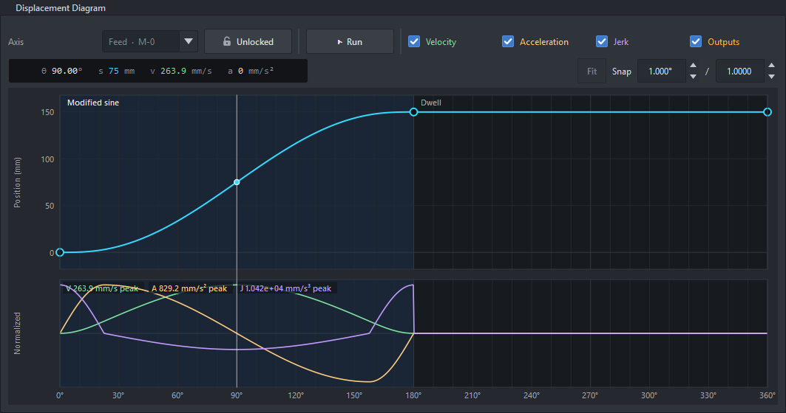
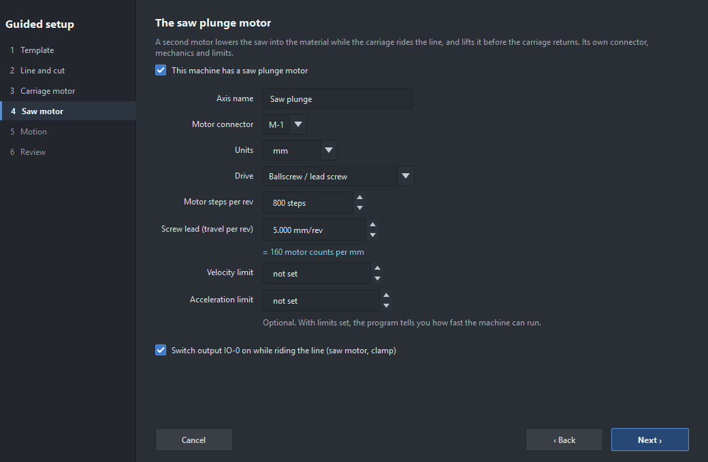
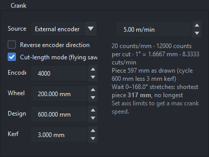
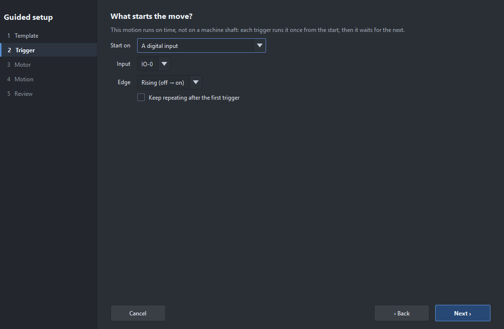
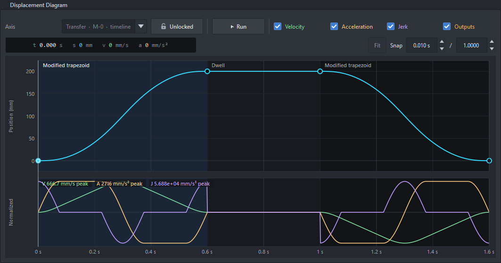

Four real machines, each built from a blank start. Numbers are a sensible start for a bench test; change them for your machine.
The machine: a pusher on a 10 mm ballscrew pushes a carton 50 mm off a conveyor once per machine cycle, holds it while the next one arrives, and returns. An encoder (1000 lines) on the machine's main shaft gives the cycle.

The pusher: cycloidal rise and return, with dwells. Velocity and acceleration start and end at zero: no knocks.

The same motion as the plate cam it replaces.
Check: Analysis shows 150 mm/s peak at 30 rpm and the motor at 900 rpm. To run faster, set the axis's velocity and acceleration limits: the Crank page then shows the highest safe speed.
The machine: a belt conveyor (50 mm pulley) advances 150 mm each cycle, then stops while a station works.

An open profile: it ends 150 mm on from where it started, and the next cycle carries on from there.
Check: the profile is open (Axis page), so the position keeps adding up cycle after cycle. Analysis shows the advance per revolution.
The machine: extruded profile runs at 5 m/min under an encoder wheel (200 mm circumference, 4000 counts). A carriage on a 10 mm ballscrew rides the line while a saw (second motor, 5 mm screw) plunges 6 mm. Pieces of 600 mm, 3 mm blade. The saw motor (IO-0) runs during the cut.

The saw motor has its own step: its connector, mechanics and limits.
The flying saw's carriage: wait, blend up to line speed, ride the line through the sync while the saw (IO-0) is on, blend down and return.

The Crank page in cut-length mode: counts per mm, the wait that stretches, and the shortest piece.
Run it: upload, tick Simulate, Start, then Run the Sim encoder at 5 m/min. Change the Cut length on the Board page while it runs: the next piece takes the new length. See cut-length mode.
The machine: a belt-driven transfer moves a part 200 mm when a sensor on IO-0 sees it, holds it 0.4 s, and comes back. No machine shaft: the timeline times it.

Guided setup for a triggered move: the trigger step, here a rising edge on IO-0.

The timeline move: out, hold, back; it rests at the end until the next trigger.
Add a gripper: double-click lane IO-1 in the Outputs band at 0.6 s and drag its end to 1.0 s: the gripper closes for the hold. The Pick and place example (File › Open example) has three axes and two outputs done this way.

The Pick and place example in the Timing view: X travel, Z lift and a vacuum rotate on one timeline.